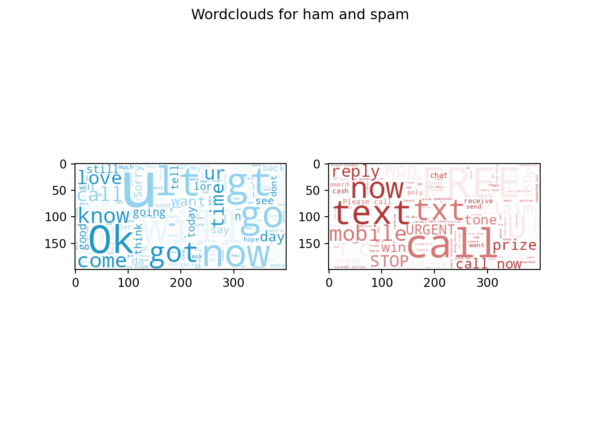
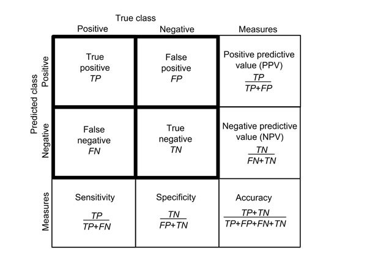

| Topic | Tasks | Activities | Student | Teacher | |
|---|---|---|---|---|---|
| 2 | Naive Bayes | Build a k-nearest neighbors model and explain how it may be used to predict the values of data points. | Follow along: students will participate in a guided demo of a data mining process building a model using Naive Bayes and evaluating its accuracy using a Confusion Matrix. | ‘We learned about the Naive Bayes algorithm, its advantages and limitations, as well as how to interpret a confusion matrix to evaluate the accuracy of a model.’ | ‘Our goal here is to understand how data mining algorithms work and how they can be applied to real-world problems. As a teacher, my role is to clarify any doubts and ensure that everyone is actively participating. As students, you will be challenged to apply your knowledge to a problem and think critically.’ |
4 Probabilistic Learning with Naive Bayes Classification
Naïve Bayes is commonly used algorithm in data mining. It works by using statistical probabilities to classify data points based on their observed characteristics.
4.1 Business Case: Filtering Spam
In 2020 spam accounted for more than 50% of total e-mail traffic (“Spam Statistics: Spam e-Mail Traffic Share 2019” n.d.). This illustrates the value of a good spam filter. Naive Bayes spam filtering is a standard technique for handling spam. It is one of the oldest ways of doing spam filtering, with roots in the 1990s.
4.2 Data Understanding
The data you’ll be using comes from the SMS Spam Collection (“UCI Machine Learning Repository: SMS Spam Collection Data Set” n.d.). It contains a set of SMS messages that are labeled ‘ham’ or ‘spam’. and is a standard data set for testing spam filtering methods.
url = "https://raw.githubusercontent.com/businessdatasolutions/courses/main/datamining-n/datasets/smsspam.csv"
rawDF = pd.read_csv(url)
rawDF.head() type text
0 ham Go until jurong point, crazy.. Available only ...
1 ham Ok lar... Joking wif u oni...
2 spam Free entry in 2 a wkly comp to win FA Cup fina...
3 ham U dun say so early hor... U c already then say...
4 ham Nah I don't think he goes to usf, he lives aro...The variable type is of class object which in Python refers to text. As this variable indicates whether the message belongs to the category ham or spam it is better to convert it to a category variable.
catType = CategoricalDtype(categories=["ham", "spam"], ordered=False)
rawDF.type = rawDF.type.astype(catType)
rawDF.type0 ham
1 ham
2 spam
3 ham
4 ham
...
5567 spam
5568 ham
5569 ham
5570 ham
5571 ham
Name: type, Length: 5572, dtype: category
Categories (2, object): ['ham', 'spam']To see how the types of sms messages are distributed you can compare the counts for each category.
rawDF.type.value_counts()type
ham 4825
spam 747
Name: count, dtype: int64Often you’ll prefer the relative counts.
rawDF.type.value_counts(normalize=True)type
ham 0.865937
spam 0.134063
Name: proportion, dtype: float64You can also visually inspect the data by creating wordclouds for each sms type.
# Generate a word cloud image]
hamText = ' '.join([Text for Text in rawDF[rawDF['type']=='ham']['text']])
spamText = ' '.join([Text for Text in rawDF[rawDF['type']=='spam']['text']])
colorListHam=['#e9f6fb','#92d2ed','#2195c5']
colorListSpam=['#f9ebeb','#d57676','#b03636']
colormapHam=colors.ListedColormap(colorListHam)
colormapSpam=colors.ListedColormap(colorListSpam)
wordcloudHam = WordCloud(background_color='white', colormap=colormapHam).generate(hamText)
wordcloudSpam = WordCloud(background_color='white', colormap=colormapSpam).generate(spamText)
# Display the generated image:
# the matplotlib way:
fig, (wc1, wc2) = plt.subplots(1, 2)
fig.suptitle('Wordclouds for ham and spam')
wc1.imshow(wordcloudHam)
wc2.imshow(wordcloudSpam)
plt.show()
Question:
- What differences do you notice?
4.3 Preparation
After you’ve glimpsed over the data and have a certain understanding of its structure and content, you are now ready to prepare the data for further processing. For the naive bayes model you’ll need to have a dataframe with wordcounts. To save on computation time you can set a limit on the number of features (columns) in the wordsDF dataframe.
vectorizer = TfidfVectorizer(max_features=1000)
vectors = vectorizer.fit_transform(rawDF.text)
wordsDF = pd.DataFrame(vectors.toarray(), columns=vectorizer.get_feature_names_out())
wordsDF.head() 000 03 04 0800 08000839402 ... your yours yourself yr yup
0 0.0 0.0 0.0 0.0 0.0 ... 0.0 0.0 0.0 0.0 0.0
1 0.0 0.0 0.0 0.0 0.0 ... 0.0 0.0 0.0 0.0 0.0
2 0.0 0.0 0.0 0.0 0.0 ... 0.0 0.0 0.0 0.0 0.0
3 0.0 0.0 0.0 0.0 0.0 ... 0.0 0.0 0.0 0.0 0.0
4 0.0 0.0 0.0 0.0 0.0 ... 0.0 0.0 0.0 0.0 0.0
[5 rows x 1000 columns]The counts are normalized in such a way that the words that are most likely to have predictive power get heavier weights. For instance stopword like “a” and “for” most probably will equally likely feature in spam as in ham messages. Therefore these words will be assigned lower normalized counts.
Before we start modeling we need to split all datasets into train and test sets. The function train_test_split() can be used to create balanced splits of the data. In this case we’ll create a 75/25% split.
xTrain, xTest, yTrain, yTest = train_test_split(wordsDF, rawDF.type)4.4 Modeling and Evaluation
We have now everything in place to start training our model and evaluate against our test dataset. The MultinomialNB().fit() function is part of the scikit learn package. It takes in the features and labels of our training dataset and returns a trained naive bayes model.
bayes = MultinomialNB()
bayes.fit(xTrain, yTrain)MultinomialNB()In a Jupyter environment, please rerun this cell to show the HTML representation or trust the notebook.
On GitHub, the HTML representation is unable to render, please try loading this page with nbviewer.org.
MultinomialNB()
The model can be applied to the test features using the predict() function which generates a array of predictions. Using a confusion matrix we can analyze the performance of our model.

yPred = bayes.predict(xTest)
yTrue = yTestaccuracyScore = accuracy_score(yTrue, yPred)
print(f'Accuracy: {accuracyScore}')Accuracy: 0.9676956209619526matrix = confusion_matrix(yTrue, yPred)
labelNames = pd.Series(['ham', 'spam'])
pd.DataFrame(matrix,
columns='Predicted ' + labelNames,
index='Is ' + labelNames) Predicted ham Predicted spam
Is ham 1182 4
Is spam 41 166Questions:
- What do you think is the role of the
alphaparameter in theMultinomialNB()function? - How would you assess the overall performance of the model?
- What would you consider as more costly: high false negatives or high false positives levels? Why?